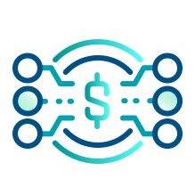
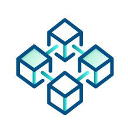
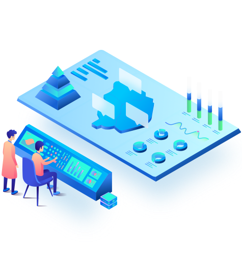

赋能虚拟货币的 合规化应用
掌握链上监管，提供情景化和有洞察的分析
服务
可疑虚拟货币交易分析

可疑洗钱线索发现和预警

虚拟货币资产追踪溯源和调查取证服务
产品
虚拟资产地址风控API
中国公安虚拟资产地址黑产名单
OFAC、CFSP虚拟资产地址制裁名单
链上地址标签包括涉及虚拟资产的灰色产业
AML交易分析风控模型
VASP风险评分数据库
虚拟资产交易行为追踪及预警平台
虚拟资产地址及交易监控
具风险的虚拟资产地址及交易分析
为可疑链上活动提供实时预警
面对虚拟资产服务提供商 (VASP) 的风险画像评估

原点线上骗局举报平台
原点科技提供线上渠道让民众举报线上骗局，目的是让民众预防可疑骗局以及申请协助虚拟资产维权。提供：
资金追踪：追踪资金转移链路，并及时联系受损资金流入平台
整理证据：收集并整理欺诈者的宣传话术、网站链接、涉案APP本体及使用记录、资金转账记录等
寻求立案：协助受害人整理涉案材料并连接所在管辖区报案

关于我们
原点科技是一家专注区块链数据服务和合规化的公司，于2021年成立于香港。创始团队来自阿里巴巴、美团、红杉系独角兽和全球顶级高校UC Berkeley等。团队均有8年以上互联网企业产品、大数据和人工智能领域从业经验。原点科技的使命是“赋能区块链上监管”，提供一站式链上数据产品和服务以解决政府、虚拟资产服务商和传统金融机构针对虚拟资产合规化的问题。
我们的优势
场景经验
熟悉跨境贸易场景，了解物流、资金流和信息
技术
使用业界最先进的人工智能和机器学习抓住加
连接
与亚洲区块链生态互通
联系我们
©2022 Zerable Ltd. All Rights Reserved.